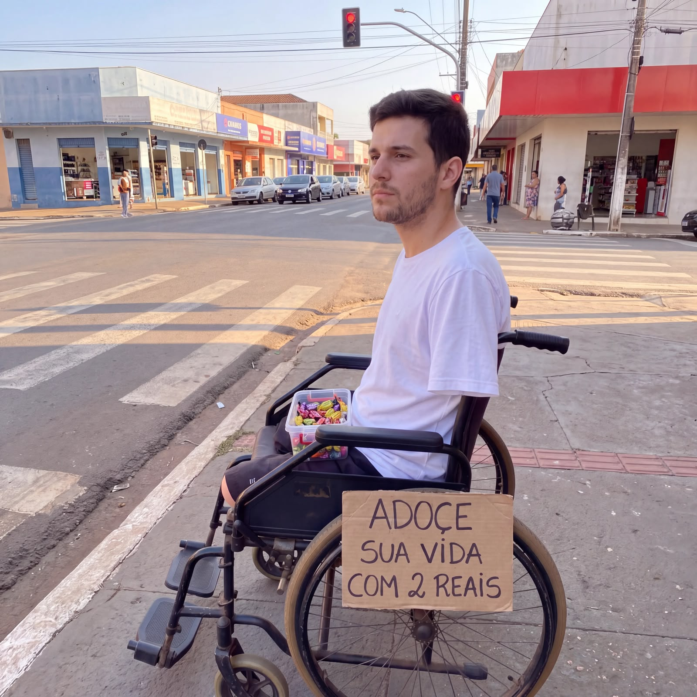
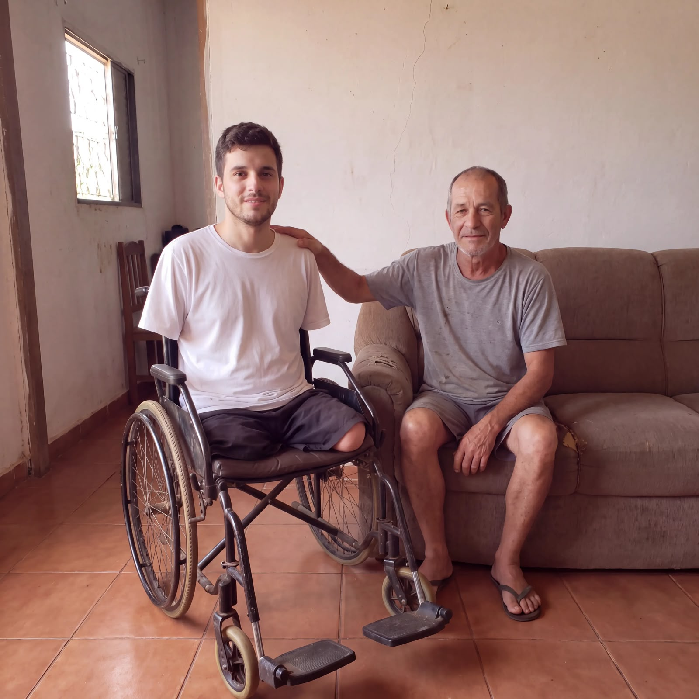

Ser Cristão de Verdade é ajudar quem precisa
Ser Cristão de Verdade é ajudar quem precisa

Campanha solidária · 30 dias
Bruno nasceu sem os dois braços e sem as duas pernas. Ele vende balas na rua para não ver o pai, que o cria sozinho, se esgotar de trabalho. Com uma cadeira de rodas motorizada, ele pode trabalhar sozinho, com dignidade.
Tempo restante
Bruno nasceu sem os dois braços e sem as duas pernas. O pai conta que, no dia em que ele nasceu, o médico o chamou numa salinha e sugeriu que ele o deixasse para adoção. O pai olhou para o médico, pegou o filho no colo e falou: "Esse filho é meu. Enquanto eu tiver forças, eu vou cuidar dele."
Hoje são só os dois. O pai de Bruno tem 60 anos e trabalhou de pedreiro a vida inteira. Cria o filho sozinho desde que ele nasceu. Bruno não consegue empurrar a própria cadeira, não consegue abrir uma porta, não consegue nem entrar na própria casa sem a ajuda do pai.
Todo dia, o pai tira Bruno da cama, o põe na cadeira e o leva até o centro da cidade para que ele possa vender balas. Ele nunca pediu nada ao filho — mas Bruno não aguenta ver o pai se esgotar daquele jeito, trabalhando na obra o dia inteiro e ainda carregando a cadeira de um lado para o outro. Vender balas foi a forma que Bruno encontrou de ajudar.
Ele fica na rua das 6h às 6h da tarde, oferecendo doces a quem passa, esperando o pai sair do trabalho para buscá-lo. Numa semana de vendas fracas, Bruno voltou para casa só com trocados e pediu desculpas ao pai, no jantar, por dar tanto trabalho. O pai largou a colher, ficou em silêncio por um instante e disse: "Meu filho, você não é um filho. Você é meu motivo de acordar todo dia. Enquanto eu conseguir ficar de pé, a gente vai lutar." Levantou-se, tirou o próprio prato de comida e deu a ele.
Foi aí que Bruno começou a fazer as contas: com uma cadeira de rodas motorizada, com controles de queixo, ele poderia ir sozinho até a avenida vender seus doces. Não dependeria mais do pai para se locomover, e o pai não precisaria mais se acabar de trabalho carregando-o para todo lado. Bruno estaria, enfim, trabalhando com as próprias forças. Só que essa cadeira custa mais do que os dois conseguem juntar em um ano inteiro.
Qualquer valor ajuda — e compartilhar esta página ajuda tanto quanto doar.
Deslize para o lado para ver todas

Cada doação aproxima Bruno de ter sua própria cadeira motorizada.
Você vai doar
R$ 100
Prestação de contas atualizada ao longo da campanha.
Assim que arrecadarmos os fundos necessários, iniciaremos a compra da cadeira de rodas motorizada com controle de queixo. Os comprovantes de cada etapa serão compartilhados aqui para garantir transparência total com todos os doadores.
Começamos a corrente do bem com a meta de R$ 100.000 em 30 dias para dar a Bruno sua cadeira de rodas motorizada e a independência para trabalhar sozinho, sem depender do pai para se locomover.
Quem quiser conferir pode solicitar pelo contato no rodapé:
Escolha quanto você quer doar
Deixe seu contato para registrarmos sua doação de R$ 100 e te enviarmos a prestação de contas.
Usamos seu contato apenas para confirmar a doação e enviar notícias da campanha. Não compartilhamos com ninguém.
Faça o PIX de R$ 100 para concluir.
Gerando seu QR Code PIX...
QR Code indisponível no momento — use o código copia-e-cola abaixo.
PIX copia e cola
Não conseguimos gerar o PIX agora.